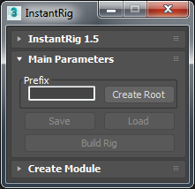

Main Parameters¶
- Prefix:
- It allows rigger to naming character. Whenever enter something new, it renames all character.
- Create Root:
- It allows rigger to create main parent node of character in the scene. It’s top of hierarchy. Everything branches from root node.
- Save & Load:
- It allows rigger to save or load rig prototypes.
- Build Rig:
It converts everything to animation ready rig. Button only enabled if any part of rig selected.
Warning
Be sure to save a version before building the rig. It’s not possible to edit rig after building.